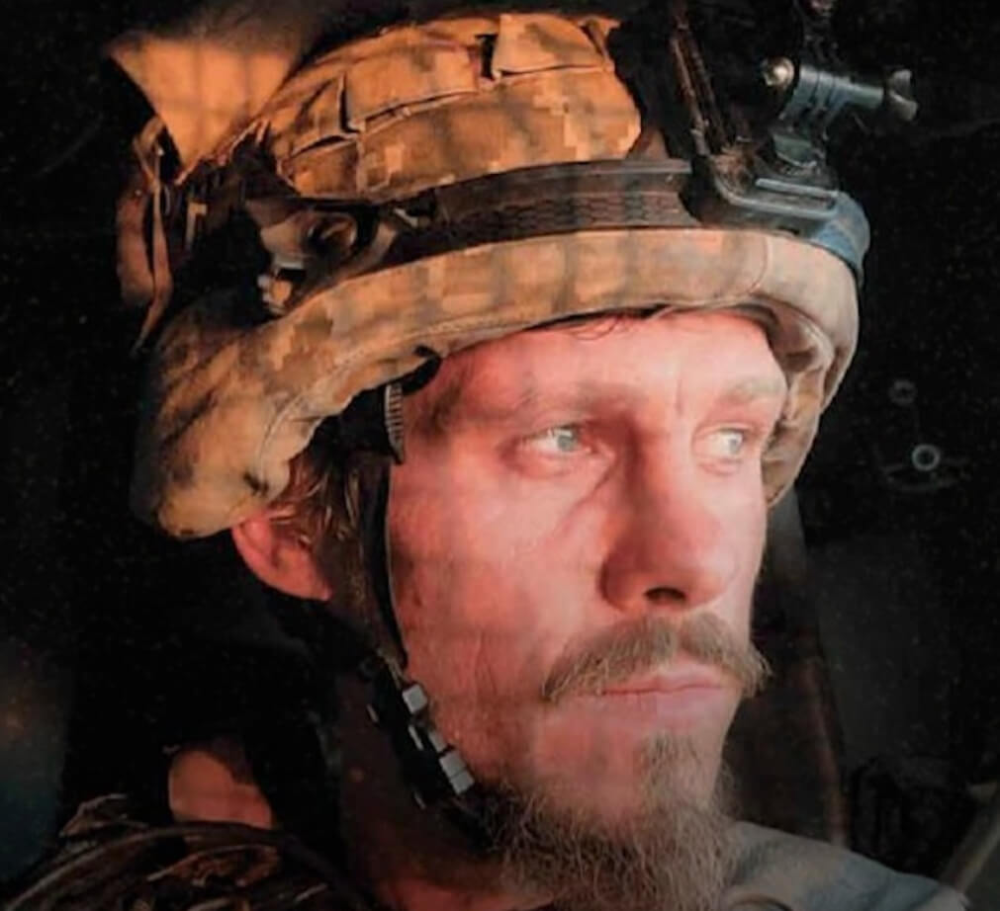

Де все зникає
2025
Feature
88 min
Ukraine · France
Released
Де все зникає
2025
Камера ввімкнена.
Людяність - під питанням.
«Де все зникає» - перший міжнародний повнометражний фільм Олександра Ткаченка, створений за підтримки ARTE у рамках проекту Generation Ukraine. Світова премʼєра фільму відбулась на фестивалі FIPADOC 2026.
DirectorОлександр Ткаченко
ProducerІлля Гладштейн
Co-producerАнтуан Голде
Supported byARTE · Generation Ukraine
◈ FIPADOC 2026 · Світова премʼєра